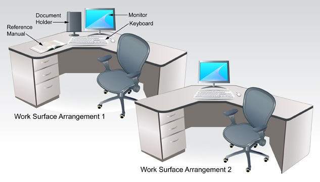

Project 1: Workstation Routines and Management
Time to Work
Project 1 will take approximately 1.5 hours. The information from this project should be practised throughout the course.
Before you begin, print and review a copy of the Workstation Routines Rubric.
For this course you will need to set up a central location to store the documents you create. Watch the demonstration “Creating a New Folder and Subfolders” to learn how to create folders for INF1070: Digital Presentation. This video is also available in the Toolkit. Check with your teacher as to where you will be saving your files.
Create a folder called INF1070, and then create the following subfolders within the INF1070 folder:
- Intro
- Presentations
- Final Project
Watch the demonstration “Opening PowerPoint for the First Time” to learn how to open Microsoft PowerPoint® 2007. Make sure you save your work in the course folder you created.
Now, it’s time to begin the project.
Step 1: Create a new word processing document. Save the file in the Intro folder and name it Ergonomics.
To review how to open a word processing file, watch the demonstration “Creating and Saving a File.”
Step 2: Add a header and/or footer to your file that includes your name, assignment name, and date.
If you are using Microsoft Word®, watch the demonstration “Headers and Footers” to review formatting headers and footers.
- Using the Internet, the glossary, or a dictionary, look up the word ergonomics and write a definition in your own words in the word processing document. Save your Ergonomics document.
Step 3: Now that you know what ergonomics is, take some time to read the information in the Workstation Ergonomics document. Do you have anything to add to your definition of ergonomics? If so, open your document and make the changes. Then resave the document.

© Juriah Mosin/shutterstock
Step 4: Watch the "Ergonomics" video.
Step 5: Study the following diagram on arranging a work surface. It is important to ensure that you, too, have a clean, well-organized area in which to work.

Adapted from: © sahua d/shutterstock, © Dan Gerber/shutterstock
This is your opportunity to improve your computer workstation. Using the information and routines you have been given, make appropriate adjustments to your furniture, equipment, and resources. If you have access to a camera, take before and after pictures.
Answer the following questions in your Ergonomics document.
- How many changes did you make?
- What corrections were you not able to make because of inadequate furniture, accessories, or lab restrictions?
Step 6: Open your Ergonomics document and insert answers to the following questions:
- What does practising good ergonomics and setting up an efficient, safe, and organized workstation mean to you?
- How can making this practice a habit help you in the long run, both personally and as you enter into the workforce?
Resave your document.

© Juriah Mosin/shutterstock
Remember: Make stretching a part of your routine. Practise the exercises you have been shown every 30 minutes. Be sure to exercise your shoulders, back, neck, wrists, fingers, and arms.
Step 7: Read the document Workstation Security for information regarding hardware and software security and keeping your personal work secure.
- Answer the following questions. You can use Internet search terms to perform some research on these topics as well.
- List three ways to protect your equipment or secure your work.
- List three ways you can protect your computer from viruses.
- In the Ergonomics document you created, comment on your areas of strength and weakness. Set a goal to improve one or two areas you identified as needing improvement. Here are a few examples of possible goals:
- I remember to stretch every 30 minutes to help reduce muscle fatigue.
- I save files frequently as I work and backup important files regularly.
Step 8: Using the Workstations Routine Rubric, complete a self-evaluation to identify areas that you may need to work on throughout the module. Revisit this rubric periodically throughout the course, and self-evaluate your progress in making appropriate workstation routines a daily habit.